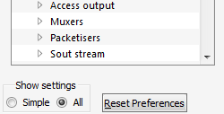
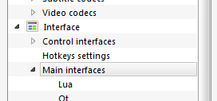
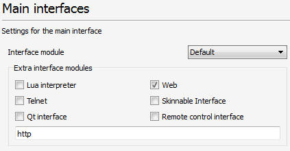
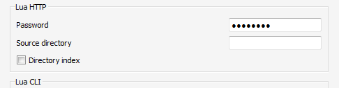

1. Install VLC 2.1 or later
2. Start VLC, click the Tools menu, and select Preferences
3. Select All under Show settings in bottom-left corner
4. Click on the Main interfaces item under the Interface category.
5. Ensure the Web checkbox is checked under the Extra interface modules header.
6. The value of the textbox below should change to "http".
7. Click on the Lua item under the Main interfaces sub category, under the Interfaces category.
8. Enter a password in the Password textbox under the Lua HTTP header. You can now save your preferences.
9. Now that you have saved the preferences, you should exit VLC, then reopen it to let the settings take effect.
10. If you are prompted, you should allow VLC through your firewall.